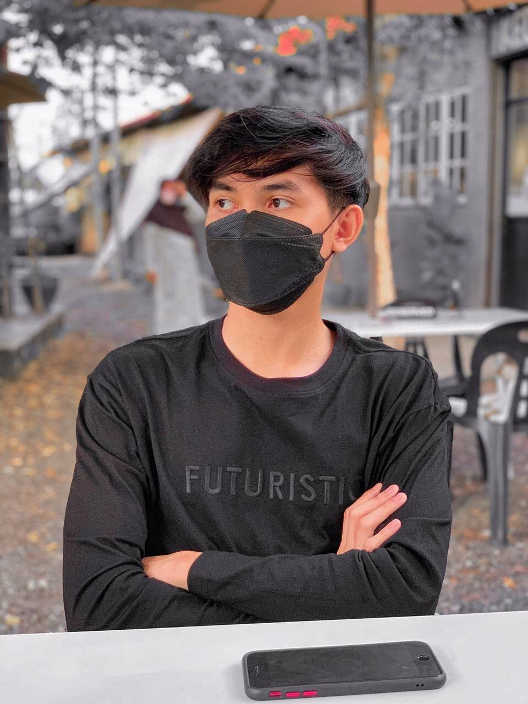
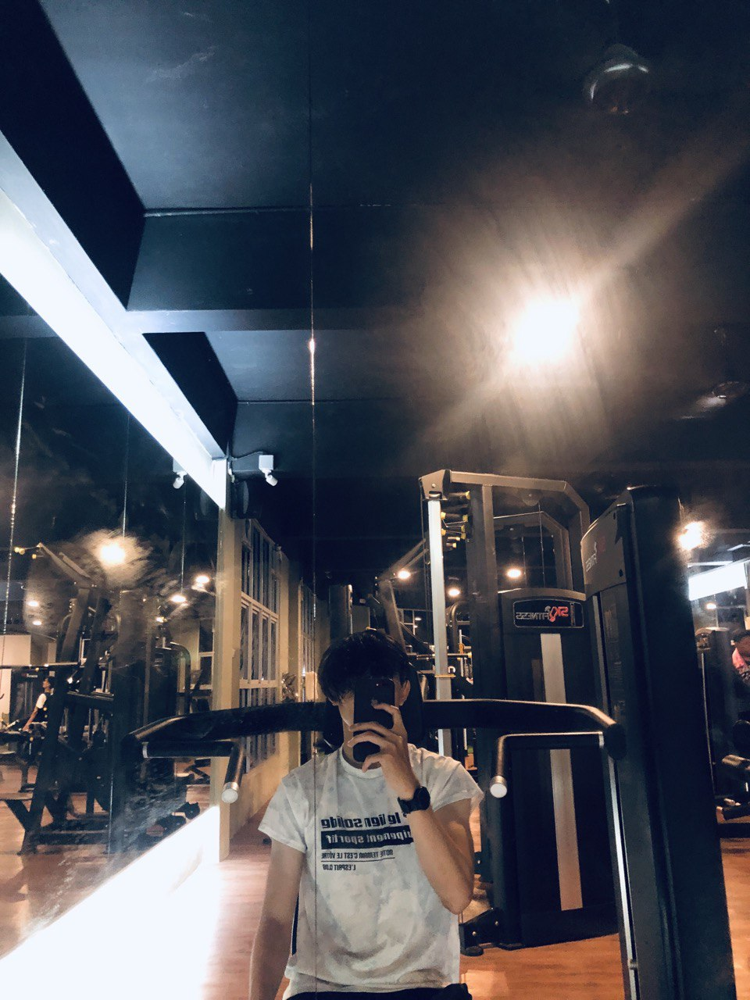

| Home | About Me | My Friend | My Family | My Hobby | My Education |
About Me
Let Me Introduce Myself

Assalamualaikum everyone! My name is Muhammad Khairullah Bin Roslan. I'm 21 years old. I come from Bukit Selambau Sungai Petani Kedah. I was born on 27 October 2001 in a Hospital called Sultan Abdul Halim Hospital. I am a person who loves sports especially Badminton. My favorite food is Nasi Goreng Kampung.

I am a person who likes to exercise in my spare time. I love to exercise is to keep my body so that I am always active and healthy. I would go to the gym on days I wasn’t busy working out. This is because exercising can relieve the stress that is in me and it will make me fitter. Exercising really helps me in dealing with stress and fatigue in my life. After exercising I will feel more refreshed and energetic.